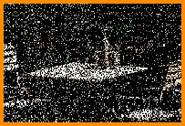
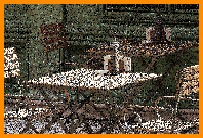
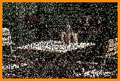
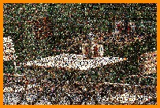

TLTR: We present Neural Incident Radiance Cache (NIRC) for efficient fully-fused neural network-based Global Illumination integration, combined with Two-Level Monte Carlo for unbiased results - achieving faster training and better representation than previous methods.
We introduce an efficient Two-Level Monte Carlo (subset of Multi-Level Monte Carlo, MLMC) estimator for real-time renderingof scenes with global illumination. Using MLMC we split the shading integral into two parts: the radiance cache integral andthe residual error integral that compensates for the bias of the first one. For the first part, we developed the Neural Incident Radiance Cache (NIRC) leveraging the power of tiny neural networks [MRNK21] as a building block, which is trained on thefly. The cache is designed to provide a fast and reasonable approximation of the incident radiance: an evaluation takes 2-25× less compute time than a path tracing sample. This enables us to estimate the radiance cache integral with a high number ofsamples and by this achieve faster convergence. For the residual error integral, we compute the difference between the NIRCpredictions and the unbiased path tracing simulation. Our method makes no assumptions about the geometry, materials, orlighting of a scene and has only few intuitive hyper-parameters. We provide a comprehensive comparative analysis in differentexperimental scenarios. Since the algorithm is trained in an on-line fashion, it demonstrates significant noise level reductioneven for dynamic scenes and can easily be combined with other noise reduction techniques
Note: This project page is currently under construction. More content and details will be added soon.
@article{https://doi.org/10.1111/cgf.70050,
author = {Dereviannykh, Mikhail and Klepikov, Dmitrii and Hanika, Johannes and Dachsbacher, Carsten},
title = {Neural Two-Level Monte Carlo Real-Time Rendering},
journal = {Computer Graphics Forum},
volume = {n/a},
number = {n/a},
pages = {e70050},
keywords = {CCS Concepts, • Computing methodologies → Ray tracing, Neural networks},
doi = {https://doi.org/10.1111/cgf.70050},
url = {https://onlinelibrary.wiley.com/doi/abs/10.1111/cgf.70050},
eprint = {https://onlinelibrary.wiley.com/doi/pdf/10.1111/cgf.70050},
abstract = {Abstract We introduce an efficient Two-Level Monte Carlo (subset of Multi-Level Monte Carlo, MLMC) estimator for real-time rendering of scenes with global illumination. Using MLMC we split the shading integral into two parts: the radiance cache integral and the residual error integral that compensates for the bias of the first one. For the first part, we developed the Neural Incident Radiance Cache (NIRC) leveraging the power of tiny neural networks [MRNK21] as a building block, which is trained on the fly. The cache is designed to provide a fast and reasonable approximation of the incident radiance: an evaluation takes 2–25 × less compute time than a path tracing sample. This enables us to estimate the radiance cache integral with a high number of samples and by this achieve faster convergence. For the residual error integral, we compute the difference between the NIRC predictions and the unbiased path tracing simulation. Our method makes no assumptions about the geometry, materials, or lighting of a scene and has only few intuitive hyper-parameters. We provide a comprehensive comparative analysis in different experimental scenarios. Since the algorithm is trained in an on-line fashion, it demonstrates significant noise level reduction even for dynamic scenes and can easily be combined with other noise reduction techniques.}
}